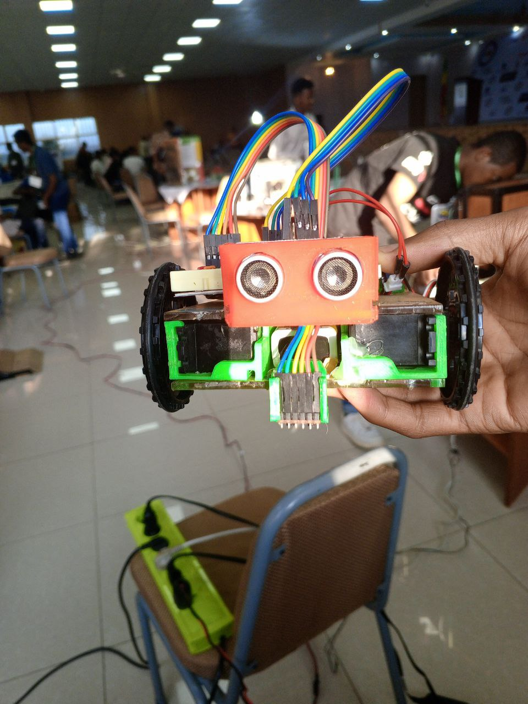

Programming & Algorithms
Strengthening problem-solving skills through competitive programming, algorithm design, and practical software development. This foundation prepares students for advanced computing, research, and future innovation.
EAGLOPEN encourages its community to explore real-world challenges through practical projects, research, engineering, and technology. Our work focuses on developing skills while creating solutions that can make a meaningful difference in our communities.
Strengthening problem-solving skills through competitive programming, algorithm design, and practical software development. This foundation prepares students for advanced computing, research, and future innovation.
Exploring artificial intelligence through practical projects, machine learning fundamentals, computer vision, and data-driven solutions that introduce students to modern AI technologies.
Designing practical engineering projects that combine electronics, embedded systems, and creative thinking to address real-world challenges through technology.
Exploring the fundamentals of aerospace through introductory learning, design concepts, simulations, and student projects. We encourage curiosity about aviation, space technology, and the engineering principles that make flight possible.
Every EAGLOPEN project follows the same disciplined journey — a community problem enters, a validated solution leaves.
We start in clinics, classrooms, and communities — documenting real needs before writing a single line of code.
Literature review, experimental design, and rapid prototyping — guided by faculty mentors and domain experts at ASTU.
Field testing, clinical calibration, ethics review, and peer feedback — solutions must prove themselves before deployment.
Working systems in real hands — rural health centers, assistive tools, and training pipelines that outlast any single project.
Active research initiatives — each one paired with the people, institutions, and communities it serves.
 Watch the research in action
Watch the research in action
Step inside the labs, the field sites, and the late-night build sessions. This is what problem-driven research looks like at EAGLOPEN — real hardware, real data, real communities.
End-to-end pipeline: mobile colposcope capture, CNN-based lesion classification, and clinician-facing decision support — targeting deployment in rural Ethiopian health centers.
Automatic speech recognition models fine-tuned for Amharic dialects, integrated into screen-reader and communication tools for visually impaired users.
Arduino-based SpO₂ monitor with clinical calibration protocol, designed for under $15 BOM cost and field validation in Adama regional hospitals.
An assistive technology project focused on helping people with visual impairments through obstacle detection, emergency communication, location awareness, and smart accessibility features. Developed to explore practical solutions that improve independence and everyday life.
EAGLOPEN's student research team took first place at the 2024 National Science and Engineering Competition — a landmark moment of recognition for the organization's training model and its young engineers.
Read the story Achievement
Achievement
Participants from EAGLOPEN programs achieve national recognition in science and engineering competitions, demonstrating the depth of talent within our community.
Read more
ResearchThe latest BlindTech prototype has entered its testing phase, marking another important milestone in the project's development. The team is evaluating its performance, gathering feedback, and refining the system to improve reliability, accessibility, and real-world usability
Read moreExplore project demonstrations, innovation showcases, student presentations, event highlights, and milestone moments that reflect EAGLOPEN's journey in science, technology, and innovation.
Research that stands up to scrutiny — submitted, presented, and reviewed by the international scientific community.
Deep Learning-Assisted Visual Inspection for Cervical Cancer Screening in Low-Resource Settings
Proceedings of the Ethiopian AI & Health Symposium, Adama
2025 · Under ReviewBuilding National Capacity in Competitive Programming: The AlgoLab Model at ASTU
International Conference on Computing Education in Africa (ICEA)
2024 · PresentedDesign and Validation of a Low-Cost Pulse Oximeter for Rural Ethiopian Clinics
IEEE Africon — Biomedical Engineering Track
2025 · SubmittedWe build alongside universities, hospitals, and industry. This network is growing — and there is room for your institution.
Host institution — labs, faculty mentorship, and academic backing for every research track.
Academic PartnerClinical validation sites for the VIA+AI screening system and biomedical device field trials.
Clinical PartnerVisiting researchers and advisors connecting EAGLOPEN projects to the global scientific community.
AdvisoryBring clinical data, engineering expertise, or research funding — and help us solve problems that matter.
Become a partnerThe cervical cancer screening study enters peer review at the Ethiopian AI & Health Symposium — a major milestone for the clinical AI track.
The low-cost SpO₂ monitor completes bench calibration and moves toward ethics approval for hospital field validation in Adama.
EAGLOPEN's national training model is presented at the International Conference on Computing Education in Africa.

Founder and Executive Director of EAGLOPEN Science and Technology Organization, Founder of AlgoLab, Student Researcher, Software Developer, Winner of the STEM Science and Engineering Fair, First Place Winner of the National Science and Engineering Competition, Gold Medalist in Science and Engineering, AI and Technology Educator, Innovation and Startup Advocate, Research Project Lead, Community Builder, Youth Leadership Advocate.
Director of the University–Industry Linkage and Technology Transfer Directorate at Adama Science and Technology University. Assistant Professor, researcher, and educator specializing in materials science, technology transfer, and engineering innovation. Supports collaboration between academia and industry while mentoring student researchers and promoting innovation, intellectual property, and inclusive technology development.
Associate Dean of the Research and Technology Transfer Office at Adama Science and Technology University. Assistant Professor and researcher with expertise in electronics, communication engineering, and telecommunications. Provides academic leadership, supervises research activities, and mentors undergraduate and graduate students while supporting innovation and technology development.

Chief Executive Officer of the President's Office at Adama Science and Technology University. Assistant Professor of Computer Science, researcher, and graduate advisor with interests in artificial intelligence and digital technologies. Actively supports research, innovation, and academic excellence while mentoring students and advancing technology-driven initiatives.
Most researchers enter through EAGLOPEN programs like AlgoLab, or by joining a track at ASTU. Reach out via the contact page with your background and the focus area you're interested in.
Yes — we actively partner with universities, hospitals, and industry. Collaboration can include clinical data, engineering expertise, joint publications, or research funding.
Where possible, yes. Projects like the Amharic ASR toolkit follow an open-source roadmap so the wider community can build on our work. Clinical projects follow ethics and privacy constraints first.
Through a combination of institutional support from ASTU, grants, and partnerships. If you represent a funding body, we'd love to talk — every dollar goes directly into hardware, field work, and student researchers.
We partner with universities, hospitals, industry, and funding bodies worldwide. Whether you bring clinical data, engineering expertise, or research funding — let's build solutions that save lives and advance African science.